Social
What each story becomes on Instagram, Facebook, X and WhatsApp: a four-slide carousel and a post written for each platform. Scroll the slides sideways.
Night Watch


WhatsApp
*Night Watch* · Wednesday 14 October Good evening and welcome to Night Watch on Sweet Melodies 94.3 FM, bringing you peace and truth this Wednesday night. _“God is our refuge and strength, a very present help in trouble.”_ — Psalms 46:1 1. *Theophilus Sunday Hosts Day 2 of Tarry Abuja 2026* Minister Theophilus Sunday leads worshippers on day two of Tarry Abuja 2026 to deepen spiritual growth and gospel outreach. https://colabourers58-hue.github.io/sweet-melodies-news/story/theophilus-sunday-hosts-day-2-of-tarry-abuja-2026/ 2. *Ohemaa Mercy Releases Live Worship Video 'Songs Of Revival'* Gospel artist Ohemaa Mercy has released a live worship video featuring powerful moments from her annual Tehilla Experience gathering. https://colabourers58-hue.github.io/sweet-melodies-news/story/ohemaa-mercy-releases-live-worship-video-songs-of-revival/ 3. *GRA Clarifies Digital VAT System Will Not Add New Tax* The Ghana Revenue Authority clarified that the new digital VAT system will not impose additional taxes on existing compliant platforms. https://colabourers58-hue.github.io/sweet-melodies-news/story/gra-clarifies-digital-vat-system-will-not-add-new-tax/ 4. *Fire at Mallam GRIDCo substation disrupts power in parts of Accra* A fire at the Mallam GRIDCo substation caused temporary power outages affecting homes, businesses, and schools across parts of Accra. https://colabourers58-hue.github.io/sweet-melodies-news/story/fire-at-mallam-gridco-substation-disrupts-power-in-parts-of-accra/ 5. *Nana Fitz urges GFA and Sports Ministry not to rush Black Stars appointment* Veteran sports administrator Nana Fitz has urged officials not to rush the appointment of the next Black Stars head coach. https://colabourers58-hue.github.io/sweet-melodies-news/story/nana-fitz-urges-gfa-and-sports-ministry-not-to-rush-black-stars-appoin/ *Let us pray* • Lord, sustain families, businesses, and students in Accra affected by recent power disruptions with swift restoration and peace. • Heavenly Father, grant wisdom to sports authorities as they seek the right leadership for the national team. • Father, let worship and prayer draw hearts closer to You, bringing spiritual renewal across our homes and communities. Listen live: Sweet Melodies 94.3 FM
New Music Friday


gospel-top-10


Theophilus Sunday Hosts Day 2 of Tarry Abuja 2026
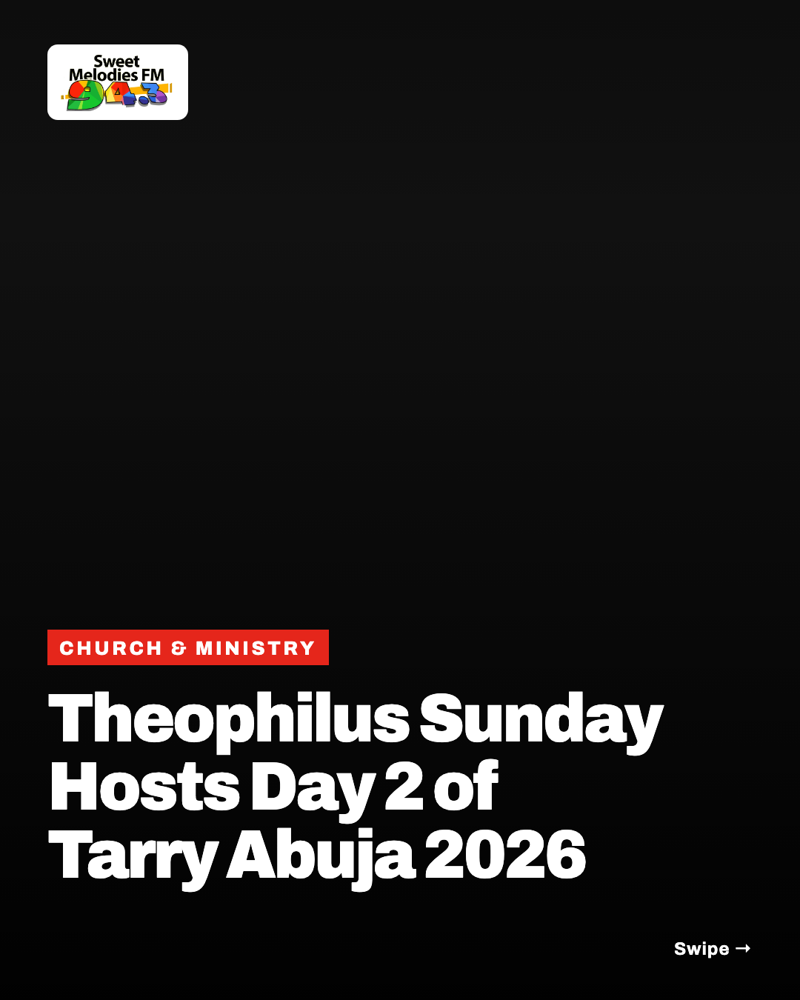
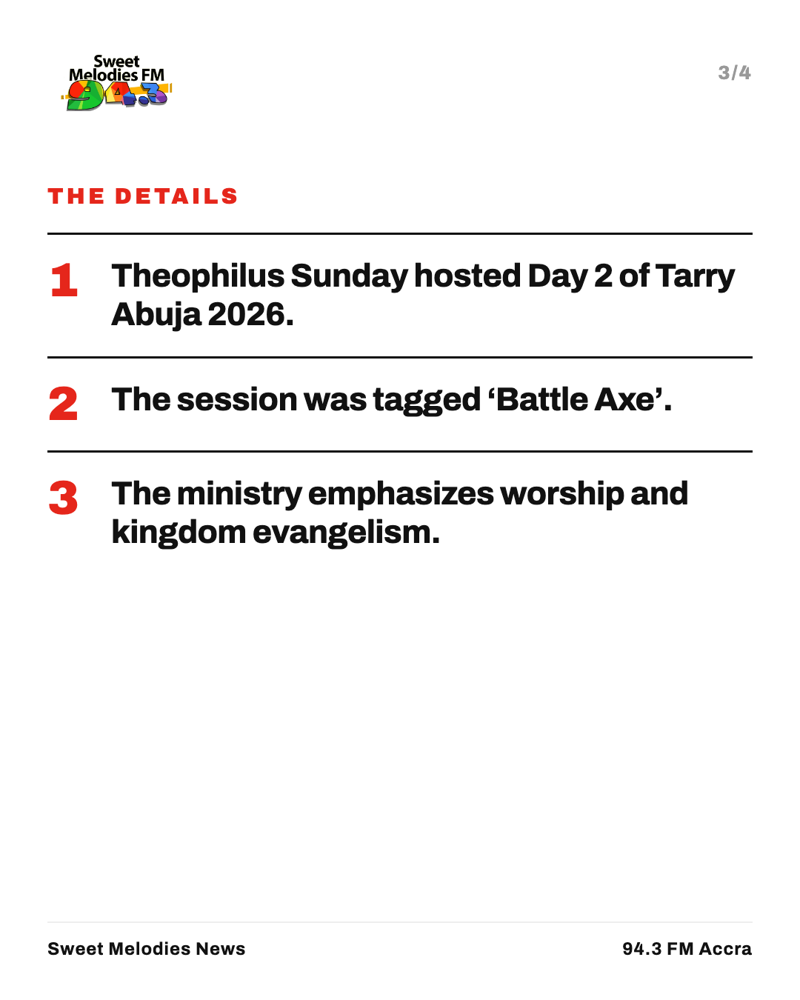

X
Theophilus Sunday has hosted Day 2 of Tarry Abuja 2026 tagged Battle Axe. Read details here: https://colabourers58-hue.github.io/sweet-melodies-news/story/theophilus-sunday-hosts-day-2-of-tarry-abuja-2026/
Instagram
Gospel minister Theophilus Sunday has held Day 2 of Tarry Abuja 2026, tagged Battle Axe, focusing on worship and gospel outreach.
Facebook
Gospel minister Theophilus Sunday has held Day 2 of Tarry Abuja 2026, tagged Battle Axe. The gathering focused on worship and kingdom evangelism. https://colabourers58-hue.github.io/sweet-melodies-news/story/theophilus-sunday-hosts-day-2-of-tarry-abuja-2026/
Whatsapp
*Theophilus Sunday Hosts Day 2 of Tarry Abuja 2026* Read more about the Battle Axe session here: https://colabourers58-hue.github.io/sweet-melodies-news/story/theophilus-sunday-hosts-day-2-of-tarry-abuja-2026/
Ohemaa Mercy Releases Live Worship Video ‘Songs Of Revival’
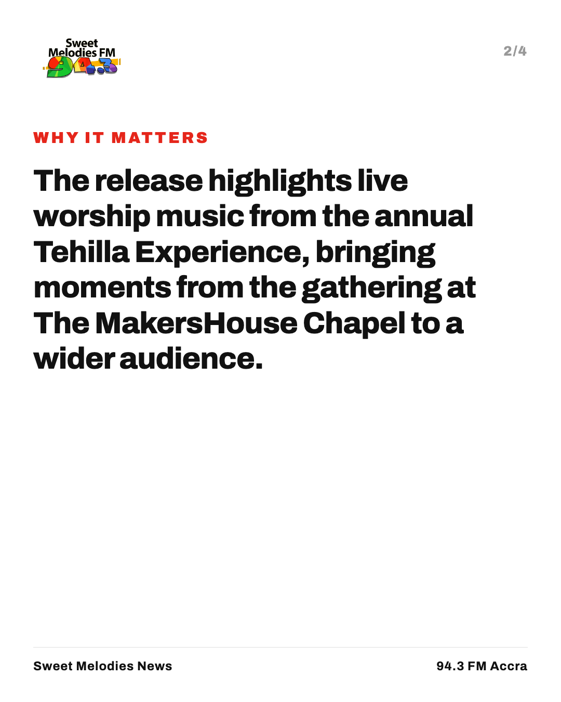
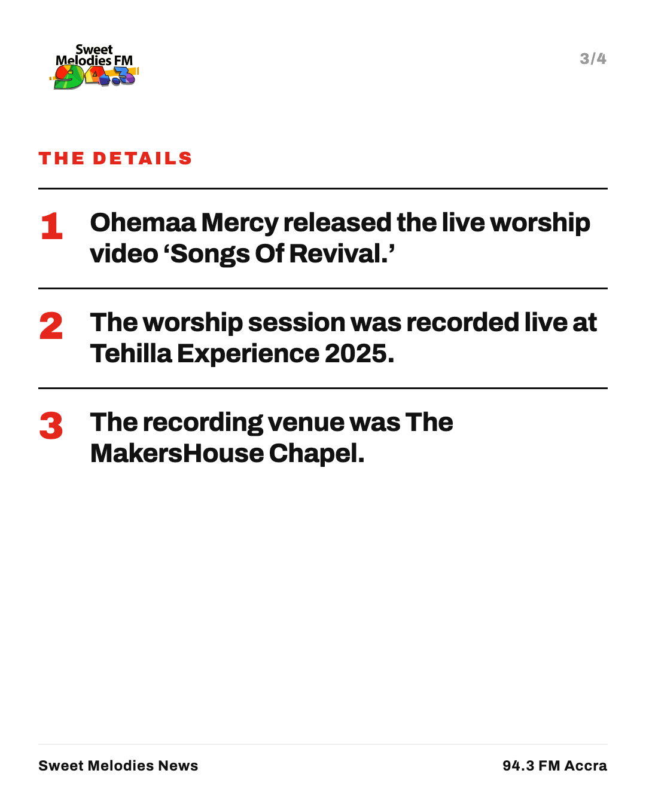

X
Gospel minister Ohemaa Mercy releases live worship video 'Songs Of Revival,' recorded at Tehilla Experience 2025 at The MakersHouse Chapel. {{link}} https://colabourers58-hue.github.io/sweet-melodies-news/story/ohemaa-mercy-releases-live-worship-video-songs-of-revival/Instagram
Gospel minister Ohemaa Mercy has released 'Songs Of Revival,' recorded live at Tehilla Experience 2025 at The MakersHouse Chapel. Watch the full session now.
Facebook
Gospel artist Ohemaa Mercy has shared 'Songs Of Revival,' recorded live during Tehilla Experience 2025 at The MakersHouse Chapel. Watch the full worship video here: {{link}}
https://colabourers58-hue.github.io/sweet-melodies-news/story/ohemaa-mercy-releases-live-worship-video-songs-of-revival/Whatsapp
*Ohemaa Mercy Releases Live Worship Video 'Songs Of Revival'*
Gospel minister Ohemaa Mercy has released 'Songs Of Revival,' recorded live at Tehilla Experience 2025 at The MakersHouse Chapel. Watch the full worship session here: {https://colabourers58-hue.github.io/sweet-melodies-news/story/ohemaa-mercy-releases-live-worship-video-songs-of-revival/}October 2026 Hallelujah Challenge Kicks Off with Day 1 Worship Session
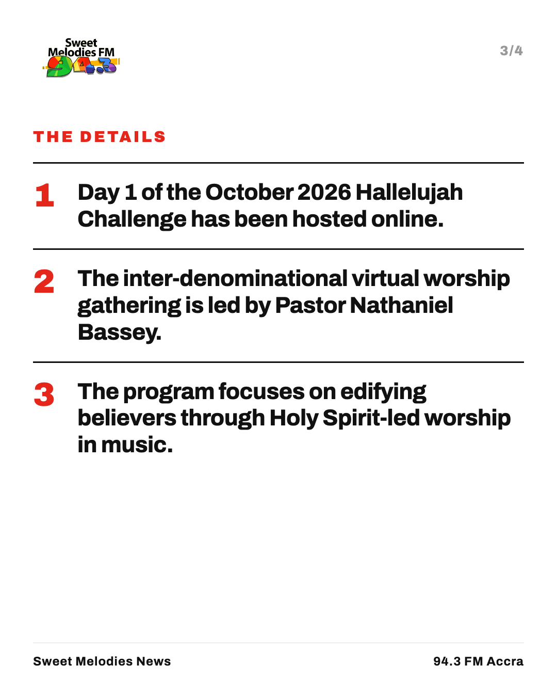

X
Day 1 of the October 2026 Hallelujah Challenge with Pastor Nathaniel Bassey has taken place online. Join the virtual worship session today. #HallelujahChallenge #SweetMelodiesFM https://colabourers58-hue.github.io/sweet-melodies-news/story/october-2026-hallelujah-challenge-kicks-off-with-day-1-worship-session/
Instagram
Pastor Nathaniel Bassey has commenced Day 1 of the October 2026 Hallelujah Challenge. The inter-denominational virtual gathering focuses on edifying believers through music and worship in the Holy Spirit. Watch the full session online. #HallelujahChallenge #NathanielBassey #SweetMelodiesFM
Facebook
Pastor Nathaniel Bassey has launched Day 1 of the October 2026 Hallelujah Challenge. The virtual fellowship brings Christians together across online platforms for spontaneous worship in music. You can watch the full service online. https://colabourers58-hue.github.io/sweet-melodies-news/story/october-2026-hallelujah-challenge-kicks-off-with-day-1-worship-session/
Whatsapp
*October 2026 Hallelujah Challenge Kicks Off with Day 1 Worship Session*
Pastor Nathaniel Bassey leads believers in the opening virtual worship session. Watch the full service here: {https://colabourers58-hue.github.io/sweet-melodies-news/story/october-2026-hallelujah-challenge-kicks-off-with-day-1-worship-session/}Kudus Faces Pressure as Tottenham Seek First Season Win

X
Ghanaian player Kudus faces pressure as Tottenham search for their first win of the season, GhanaSoccernet reports. #SweetMelodiesFM https://colabourers58-hue.github.io/sweet-melodies-news/story/kudus-faces-pressure-as-tottenham-seek-first-season-win/
Instagram
Kudus under focus as Tottenham search for initial win of the season. GhanaSoccernet reports rising expectations on the player. Tottenham are aiming to secure their opening victory of the campaign. Full story: link in bio #Kudus #Tottenham #GhanaSoccernet #SweetMelodiesFM #GhanaSports
Facebook
Ghanaian player Kudus is facing pressure to deliver as Tottenham search for their first victory of the season, according to GhanaSoccernet. Fans in Ghana and across the diaspora are monitoring his progress closely. Read the full update on our website. https://colabourers58-hue.github.io/sweet-melodies-news/story/kudus-faces-pressure-as-tottenham-seek-first-season-win/
Whatsapp
*Kudus Faces Pressure as Tottenham Seek First Season Win* GhanaSoccernet reports heightened focus on Kudus as Tottenham search for their first victory. Read full details here: https://colabourers58-hue.github.io/sweet-melodies-news/story/kudus-faces-pressure-as-tottenham-seek-first-season-win/
Pepperdine University adopts new faith statement clarifying Christian beliefs
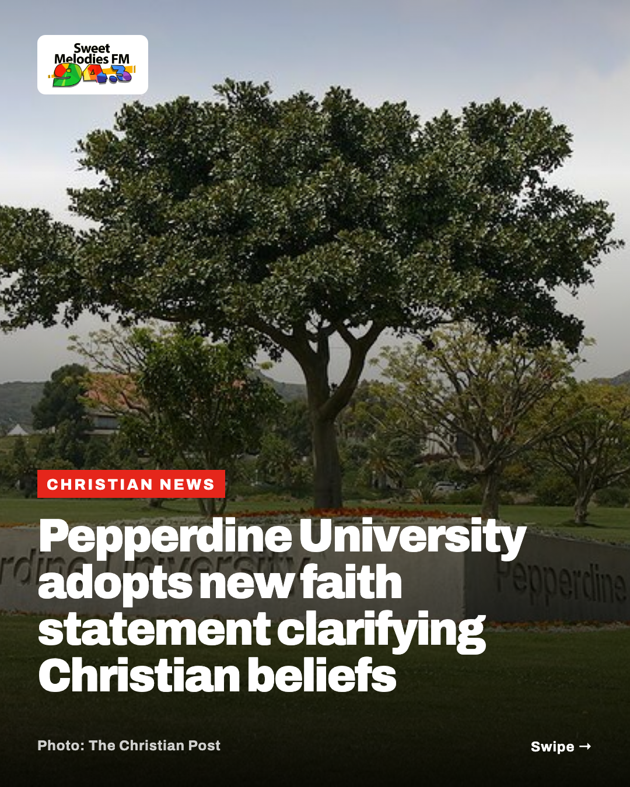
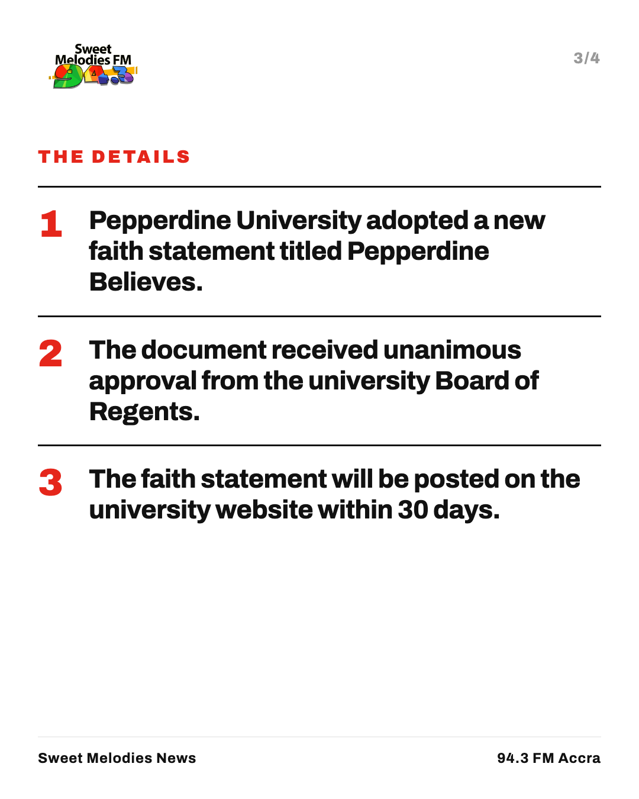

X
Pepperdine University in California has adopted a new faith statement outlining its foundational Christian beliefs on God, Scripture, and grace. #Pepperdine https://colabourers58-hue.github.io/sweet-melodies-news/story/pepperdine-university-adopts-new-faith-statement-clarifying-christian/
Instagram
Pepperdine University publishes new faith statement titled Pepperdine Believes. The California school outlined core theological views on God, Scripture, and grace. The document received unanimous approval from the university board. Full story: link in bio #Pepperdine #ChristianEducation #Faith #ChurchesOfChrist #SweetMelodiesFM Photo: The Christian Post.
Facebook
Pepperdine University in California has released a new faith statement outlining its foundational Christian beliefs. The document was unanimously approved by the university governing board. Read the full story on our website to see how the school is defining its Christian identity. https://colabourers58-hue.github.io/sweet-melodies-news/story/pepperdine-university-adopts-new-faith-statement-clarifying-christian/
Whatsapp
*Pepperdine University adopts new faith statement* The California university clarified its foundational Christian beliefs on Scripture and grace following board approval. Read more: https://colabourers58-hue.github.io/sweet-melodies-news/story/pepperdine-university-adopts-new-faith-statement-clarifying-christian/
Miles Minnick announces Christlike University album and Los Angeles concert

X
Christian hip-hop artist Miles Minnick has announced his second album Christlike University in partnership with Azusa Pacific University, alongside an upcoming Los Angeles concert. https://colabourers58-hue.github.io/sweet-melodies-news/story/miles-minnick-announces-christlike-university-album-and-los-angeles-co/
Instagram
Miles Minnick announces new album Christlike University and LA show. The West Coast rapper revealed the academic-themed rollout on the Dove Awards red carpet. He also named Lecrae, Bizzle, and T-Bone as his top Christian rap icons. Full story: link in bio #MilesMinnick #ChristianHipHop #GospelMusic #ChristlikeUniversity Photo: Rapzilla.
Facebook
West Coast Christian hip-hop artist Miles Minnick has revealed details for his second full-length album, Christlike University. Speaking at the Dove Awards, he also announced a major concert coming to Los Angeles. Read the full story on our website. https://colabourers58-hue.github.io/sweet-melodies-news/story/miles-minnick-announces-christlike-university-album-and-los-angeles-co/
Whatsapp
*Miles Minnick announces new album Christlike University* The West Coast hip-hop artist has partnered with Azusa Pacific University for his second album rollout and announced a live show in Los Angeles. Read more: https://colabourers58-hue.github.io/sweet-melodies-news/story/miles-minnick-announces-christlike-university-album-and-los-angeles-co/
Nigerian gospel singer Toluwanisings prompts prayers after death reports
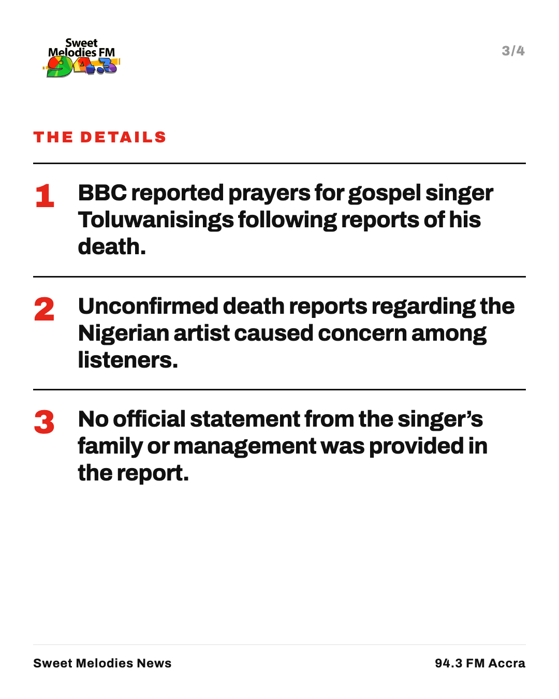

X
BBC reports that circulating death claims regarding Nigerian gospel singer Toluwanisings have prompted prayers among fans across the region. #Toluwanisings https://colabourers58-hue.github.io/sweet-melodies-news/story/nigerian-gospel-singer-toluwanisings-prompts-prayers-after-death-repor/
Instagram
Gospel singer Toluwanisings prompts prayers following reports of his death. BBC reported that circulating reports regarding the musician caused concern among fans in Nigeria. Many listeners have offered prayers for the gospel artist. Full story: link in bio #Toluwanisings #GospelMusic #ChristianNews #Ghana #Nigeria
Facebook
Reports surrounding Nigerian gospel singer Toluwanisings have led to an outpouring of prayers from fans and Christian communities. BBC reported that circulating claims concerning the artist caused concern across the region. Read the full update on our website. https://colabourers58-hue.github.io/sweet-melodies-news/story/nigerian-gospel-singer-toluwanisings-prompts-prayers-after-death-repor/
Whatsapp
*Nigerian gospel singer Toluwanisings prompts prayers after death reports* BBC reports that circulating claims regarding the musician have led to prayers across Nigeria. https://colabourers58-hue.github.io/sweet-melodies-news/story/nigerian-gospel-singer-toluwanisings-prompts-prayers-after-death-repor/
US judge extends White House press access for banned media outlets
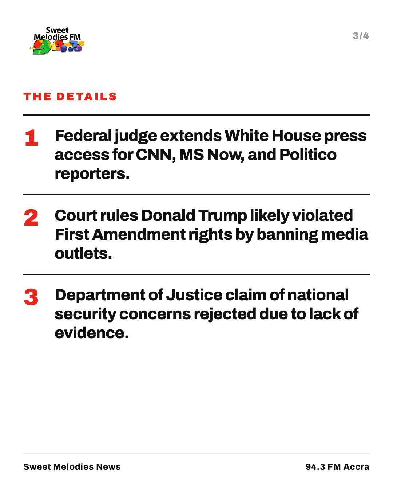

X
A US federal judge extended an order allowing CNN, MS Now and Politico journalists back into White House briefings, ruling President Trump likely violated the First Amendment. #PressFreedom https://colabourers58-hue.github.io/sweet-melodies-news/story/us-judge-extends-white-house-press-access-for-banned-media-outlets/
Instagram
Federal judge extends White House press access for banned news outlets. A US court ruled President Trump likely violated constitutional rights by barring CNN, MS Now and Politico. The judge rejected claims that passes were revoked on national security grounds. Full story: link in bio #USNews #PressFreedom #WhiteHouse #MediaRights #FirstAmendment Photo: Al Jazeera.
Facebook
A United States federal court has extended an order allowing journalists from CNN, MS Now and Politico back into White House briefings. The judge ruled that President Donald Trump likely violated First Amendment protections by discriminating against the media outlets over their reporting. Read the full story on our website. https://colabourers58-hue.github.io/sweet-melodies-news/story/us-judge-extends-white-house-press-access-for-banned-media-outlets/
Whatsapp
*US judge extends White House press access for banned outlets* A federal court ruled President Trump likely violated constitutional rights by barring reporters. Read the full story: https://colabourers58-hue.github.io/sweet-melodies-news/story/us-judge-extends-white-house-press-access-for-banned-media-outlets/
Russian strikes hit Ukrainian energy sites leaving 600,000 without power

X
Russian missile strikes hit Ukrainian energy plants overnight, leaving 600,000 without power despite a declared ceasefire. President Zelensky said Kyiv received no early warnings from partners. https://colabourers58-hue.github.io/sweet-melodies-news/story/russian-strikes-hit-ukrainian-energy-sites-leaving-600000-without-powe/
Instagram
Russian strikes leave 600,000 people without power in Ukraine. Missiles and drones damaged key energy facilities and home blocks across several cities overnight, killing nine people. President Volodymyr Zelensky said Ukraine received no early warning from Western partners before the attack. Full story: link in bio #Ukraine #Kyiv #WorldNews #Energy #Ceasefire Photo: Al Jazeera.
Facebook
Russian missile and drone attacks have hit critical energy plants across Ukraine, cutting off power to 600,000 people and killing nine. The strikes hit major cities, including Kyiv, shortly after a declared energy ceasefire. Read the full update on our website. https://colabourers58-hue.github.io/sweet-melodies-news/story/russian-strikes-hit-ukrainian-energy-sites-leaving-600000-without-powe/
Whatsapp
*Russian strikes cut power to 600,000 in Ukraine* Overnight missile attacks hit power plants and homes in Kyiv and other cities. President Zelensky reported no early warnings were received from Western partners. https://colabourers58-hue.github.io/sweet-melodies-news/story/russian-strikes-hit-ukrainian-energy-sites-leaving-600000-without-powe/
GRA Clarifies Digital VAT System Will Not Add New Tax

X
The Ghana Revenue Authority clarified that its new real-time VAT collection system will not add a fresh 20% tax to subscriptions on services like Netflix and Spotify that already charge it. #GhanaNews https://colabourers58-hue.github.io/sweet-melodies-news/story/gra-clarifies-digital-vat-system-will-not-add-new-tax/
Instagram
The Ghana Revenue Authority says its digital VAT system will not increase prices for existing subscribers. Tax officials clarified that 92 foreign platforms already remit the 20 per cent statutory tax. About 100 newly identified digital platforms will be added to the collection system gradually. The rollout affects streaming and online services, but excludes imported physical goods. Full story: link in bio #GhanaNews #GRA #DigitalVAT #GhanaEconomy #SweetMelodiesFM Photo: MyJoyOnline.
Facebook
The Ghana Revenue Authority has clarified that its new digital VAT collection framework will not add a fresh 20 per cent tax to online subscriptions. Commissioner-General Anthony Kwasi Sarpong explained that prices for platforms already charging the tax, such as Netflix and Spotify, will remain unchanged. However, about 100 foreign providers not previously charging VAT will be brought into compliance progressively. Read the full story on our website to see how these tax rules affect your mobile money and bank card payments. https://colabourers58-hue.github.io/sweet-melodies-news/story/gra-clarifies-digital-vat-system-will-not-add-new-tax/
Whatsapp
*GRA clarifies 20 per cent digital VAT collection system* Tax authorities confirm existing streaming subscriptions will not see price increases, while 100 non-compliant foreign services are brought into line. Read more: https://colabourers58-hue.github.io/sweet-melodies-news/story/gra-clarifies-digital-vat-system-will-not-add-new-tax/
Fire at Mallam GRIDCo substation disrupts power in parts of Accra
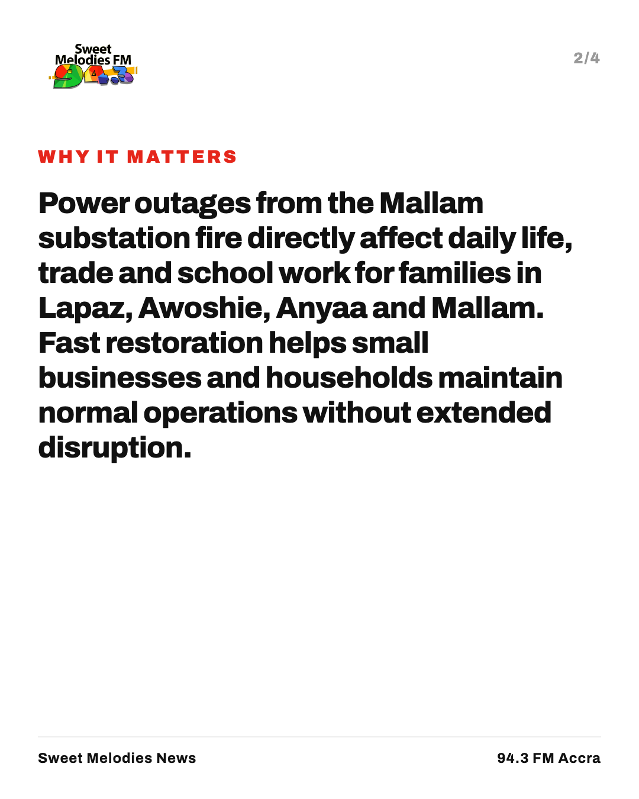

X
Power supply is being restored to parts of Accra after an early morning transformer fire at GRIDCo's Mallam substation. #Accra https://colabourers58-hue.github.io/sweet-melodies-news/story/fire-at-mallam-gridco-substation-disrupts-power-in-parts-of-accra/
Instagram
Fire at the GRIDCo Mallam substation has disrupted power in parts of Accra including Lapaz, Awoshie and Anyaa. Firefighters extinguished the blaze before it could spread to other critical equipment. Power has been restored to some areas while engineers work to replace the burnt transformer. Full story: link in bio #Accra #GRIDCo #GhanaNews #PowerOutage Photo: 3News.
Facebook
An early morning fire on a transformer at the Mallam GRIDCo substation has caused power outages in parts of Accra, including Lapaz, Anyaa and Awoshie. Firefighters successfully contained the blaze, and power has already been restored to several affected areas. Engineers are currently working to replace the damaged equipment and fully restore power to remaining neighborhoods. Click the link below to read the full report. https://colabourers58-hue.github.io/sweet-melodies-news/story/fire-at-mallam-gridco-substation-disrupts-power-in-parts-of-accra/
Whatsapp
*Fire at Mallam Substation Disrupts Accra Power* Engineers are working to restore electricity to parts of Accra after a transformer fire at GRIDCo's Mallam facility early Wednesday. Read more: https://colabourers58-hue.github.io/sweet-melodies-news/story/fire-at-mallam-gridco-substation-disrupts-power-in-parts-of-accra/
Ghana Ready For Economic Take-Off, Says Finance Minister
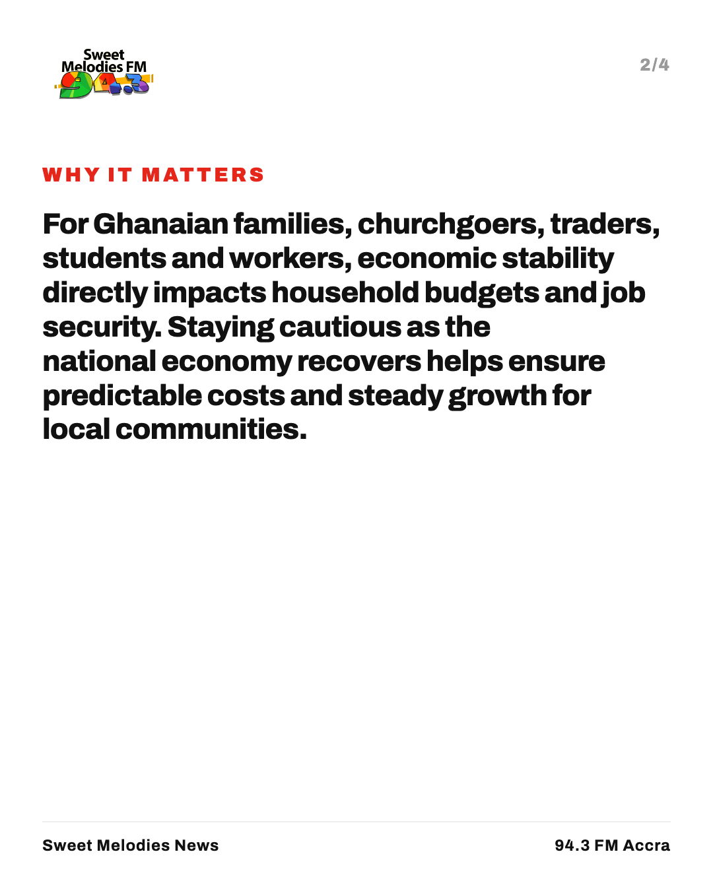
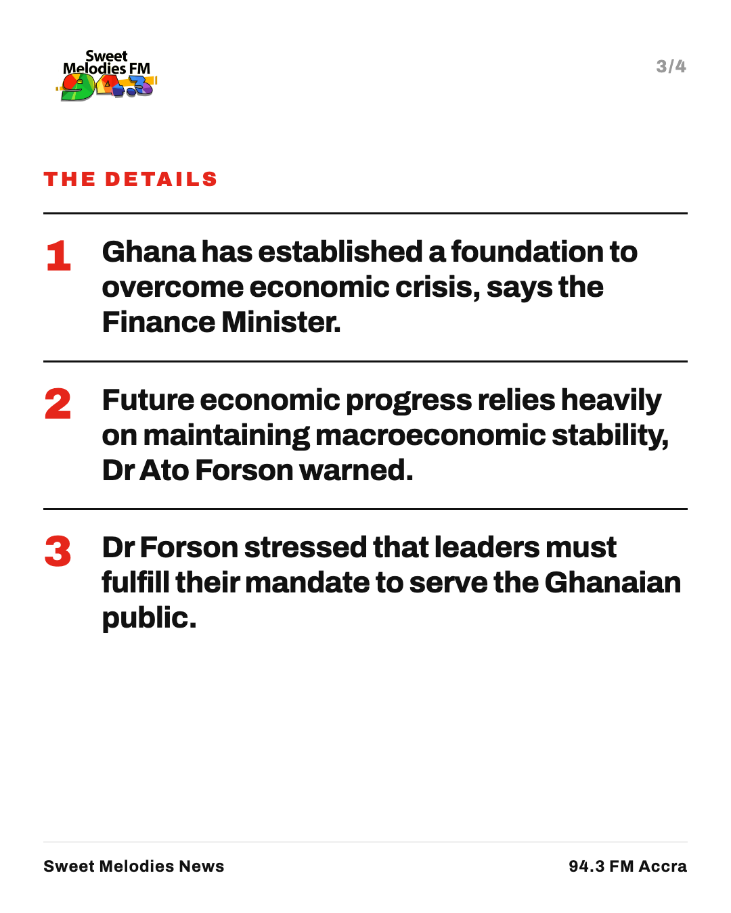

X
Finance Minister Dr Cassiel Ato Forson says Ghana has turned the tide on economic crisis, but cautions that macroeconomic stability must be protected. #GhanaEconomy https://colabourers58-hue.github.io/sweet-melodies-news/story/ghana-ready-for-economic-take-off-says-finance-minister/
Instagram
Ghana is ready for economic growth after building a stable foundation, says Finance Minister Dr Cassiel Ato Forson. Speaking on the national economy, Dr Forson warned that future progress relies on protecting stability. He urged government leaders to stay focused on serving the public. Full story: link in bio #Ghana #GhanaNews #BusinessNews #SweetMelodiesFM Photo: 3News.
Facebook
Finance Minister Dr Cassiel Ato Forson says Ghana has turned the tide on economic crisis and built the base for sustained growth. However, he emphasized that protecting macroeconomic stability remains critical for further gains. Read the full story on our website. https://colabourers58-hue.github.io/sweet-melodies-news/story/ghana-ready-for-economic-take-off-says-finance-minister/
Whatsapp
*Ghana ready for growth as crisis eases, says Finance Minister* Dr Cassiel Ato Forson says stability must be maintained to sustain economic progress. https://colabourers58-hue.github.io/sweet-melodies-news/story/ghana-ready-for-economic-take-off-says-finance-minister/